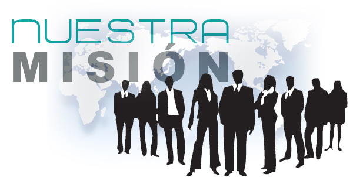

Mision
E-SHOP

Se capacita día a día es parte primordial que es su recurso humano con el fin de garantizar
y atender de una manera eficiente a toda su clientela potencial es por ello que está continuamente
modernizándose para estar al nivel de los avances tecnológicos y de calidad que
exigen los controles estatales. E-SHOP espera y aspira atender de manera directa a toda la comunidad
independiente y comercial. Es interés de E-SHOP capacitarse aun más y más para llegar aun alto grado
de profesionalismo y así no caer en improvisaciones absurdas que obstaculicen nuestros objetivos a mediano
y largo plazo. Es interés de E-SHOP a mejorar la calidad de vida de toda la comunidad, razón más que
valedera para seguir trabajando arduamente por el ser humano.
Vison
E-SHOP
Es una empresa particular e independiente dedicada a la presentación de servicios Renta de portatiles y venta
de computadores, además se dedica de manera profesional a afiliar personas a su sistema RIP
("Renta Individual de Personas") con el fin de atender de una manera especial y con beneficios especiales a
quienes opten por la afiliación directa a nuestra empresa. Nuestra misión es luchar día a día para prestar
un excelente servicio y así llegar a tener clientes satisfechos que puedan dar testimonio de nuestro servicio.